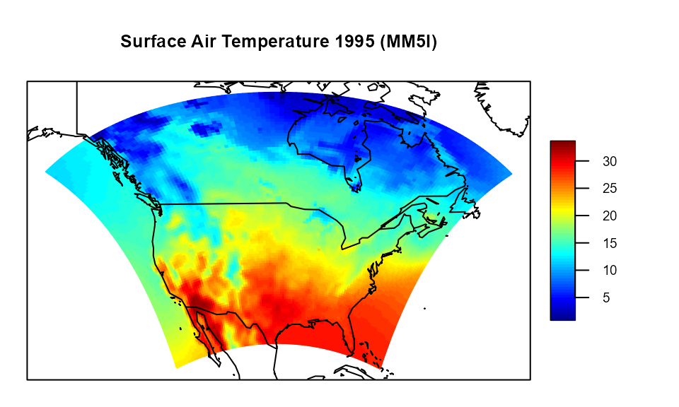
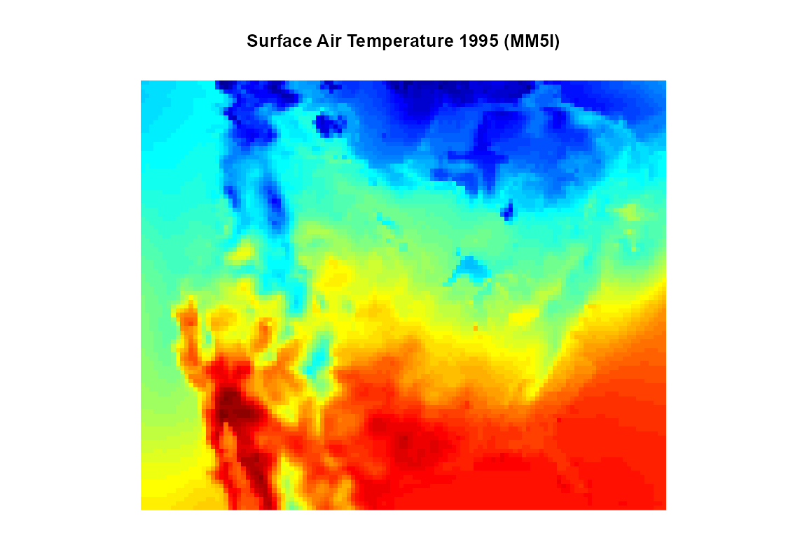
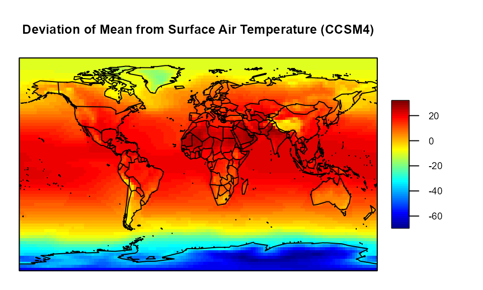

`mrbsizeR`: Scale space multiresolution analysis in R
Thimo Schuster, Roman Flury
Source:vignettes/mrbsizeR.Rmd
mrbsizeR.RmdIntroduction
mrbsizeR is an R package based on the
MRBSiZer method by Holmström et al.
(2011). The name is an abbreviation for
MultiResolution
Bayesian SIgnificant
ZEro crossings of derivatives in R and
the method extends the portfolio of Bayesian SiZer methods for images
and spatial fields, originally introduced by Erästö and Holmström (2005).
In the analysis of spatial fields or images (i.e. an object), scale space methods are often useful. When observed on different scales, distinct features of the object can be detected. Imagine the concept of a branch of a tree (Lindeberg (1994)): This concept makes sense on a scale from a few centimeters to a few meters. On a much smaller scale, one could describe the molecules that form the branch and on a much larger scale, it would be possible to describe the forest the tree grows in. The goal in scale space analysis is therefore to represent an object on different scales, and this is done by dividing it into a family of smooths. The smooths are made on different smoothing levels and each smooth provides information relevant at a particular scale, which makes it possible to extract scale-dependent features from the object.
Significant Zero Crossings of Derivatives (SiZer) is a method based on scale space ideas and has originally been developed for smooths of curves and time series. The goal is to find out whether a certain feature of the curve is “really there” or if it is just a sampling artifact. For curves and time series this is usually done by investigating the significance of the increases and decreases of the derivatives. Within the last years, this concept has been extended to various directions.
In contrast to usual scale space procedures, where a wide range of
smooths is used, mrbsizeR employs differences of smooths at
neighboring scales. This attempts to separate the features into distinct
scale categories more aggressively. In a next step, the resulting
differences are investigated with a Bayesian version of SiZer to see
which of the features found are “really there” and which are only
artifacts of sampling.
For spherical data, no Bayesian signal reconstruction is implemented.
The analysis procedure for this type of data therefore consists of the
forming of scale-dependent details and the subsequent credibility
analysis. The single steps and their application in
mrbsizeR are explained by the following three examples. For
further theory and algorithm details, see Holmström et al. (2011) and Schuster (2017). An extensive review of
different statistical scale space methods including their applications
is available in Holmström and Pasanen
(2016).
Example: Data On A Regular Grid
For the first example, data from the North American Regional Climate
Change Assessment Program (NARCCAP) is analyzed. NARCCAP is an
international program producing climate change simulations for Canada,
the United States and northern Mexico. The data used for this example is
based on the MM5I regional model and is a simulation of the surface air
temperature during summer 1995 , see also http://www2.mmm.ucar.edu/mm5/ and http://www.narccap.ucar.edu/index.html. The simulation
was carried out on a 120-by-98 regular grid, therefore 11’760 data
points are available in total. The data set is not part of the
mrbsizeR package.
# Structure of the dataset
str(tas.su.1995.MM5I)
#> List of 3
#> $ lon: num [1:120, 1:98] 241 241 242 242 242 ...
#> $ lat: num [1:120, 1:98] 23 23.1 23.2 23.3 23.5 ...
#> $ su : num [1:120, 1:98] 21.8 21.7 21.7 21.7 21.7 ...
The variables lon and lat describe the
longitude and latitude of each simulated surface air temperature in
summer 1995 in degrees Celsius (su). The data covers the
United States, the southern part of Canada and the northern part of
Mexico.

Simulated surface air temperature in summer 1995 for the United States, the southern part of Canada and the northern part of Mexico. The unit of the temperature is degrees Celsius.
As the output of the mrbsizeR analysis are plots on a
rectangular grid, it makes sense to display Figure also like this
(compare Figure ). By combining Figures and , it is still possible to
recognize all the important features such as coastlines, the Baja
California or the Great Lakes.

Simulated surface air temperature in summer 1995 for the United States, the southern part of Canada and the northern part of Mexico on a rectangular grid. Red describes warmer areas, colder areas are colored blue.
Bayesian Signal Reconstruction
The first step of the mrbsizeR analysis is the Bayesian
signal reconstruction. The data set is assumed to be a random signal
which might be noisy. In order to account for this uncertainty in the
data, a Bayesian model is used to reconstruct the original signal. The
model used is
where
is the observed random signal (compare Figures and ),
is the unobserved underlying original signal and
is the noise. A
-Inv-
prior distribution is assumed. In mrbsizeR, not the full
posterior
is of interest, but the marginal posterior
.
This marginal posterior follows a multivariate
-distribution
and sampling from it results in samples from the reconstructed original
signal
.
Depending on how much is known about the noise in
,
the prior distribution parameters can be adjusted. For the example of
the surface air temperature, the parameters
,
and
were used. This prior has little influence on the posterior as no
information about possible noise on
is available. Using the function rmvtDCT(), samples from a
-distribution
can be generated. The sampling algorithm uses a discrete cosine
transform (DCT) to speed up computations. For further information on the
distributions and the sampling algorithm, see Holmström et al. (2011) and Schuster (2017).
# Sampling from a multivariate t-distribution
tas.post.samp <- rmvtDCT(object = tas.su.1995.MM5I$su,
lambda = 0.2, sigma = 36, nu0 = 15, ns = 1000)
1000 samples of the posterior distribution of the surface air temperature in Canada, Mexico and the United States were generated. These samples now form the reconstructed signal and are used for further analysis.
Forming of scale-dependent detail components
Now that the original signal has been reconstructed, one can start
forming scale-depending detail components. For being able to create
differences of smooths at neighboring scales
,
a set of appropriate smoothing levels
needs to be known. In contrast to other scale space methods, where a
wide range of smoothing levels is used, mrbsizeR only
requires a few of them. The goal is to separate the features of the
object (here: the surface air temperature data) into scale-distinct
categories. If too many smoothing levels are chosen, this will result in
categories that do not feature relevant detail components. If, on the
other hand, too few smoothing levels are chosen, detail components on
different scales might mix up and are not recognizable anymore. It is
therefore not only crucial to determine which smoothing levels are
useful, but also the number of smoothing levels that should be used.
All methods proposed for the selection of smoothing levels have one thing in common: They offer a good starting point for finding useful smoothing levels - but to make sure that all detail components are captured optimally, user interaction is usually inevitable. Typically, a few iterations are necessary until satisfying smoothing levels are found.
The first method for the smoothing level selection depends on the
smoother implemented in mrbsizeR and the dimension of the
object analyzed only. By plotting so-called tapering functions of the
eigenvalues of
,
a precision matrix used in the smoother of mrbsizeR, and
the smoothing levels
,
it is possible to determine which
’s
could be useful. The eigenvalues and the smoothing parameters are
related as follows:
- Small ’s involve large eigenvalues of .
- Large ’s involve small eigenvalues of .
The idea is to plot the tapering functions for different ranges of so that the functions are approximately disjoint. When using these -ranges for calculating the differences of smooths, this will result in orthogonal detail components. For detailed information about the smoother used and the properties of the tapering functions, see Holmström et al. (2011) and Schuster (2017).
The surface air temperature data was simulated on a 120-by-98 grid,
and this information has to be passed to the plotting function
TaperingPlot(). The vector lambdaSmoother
contains the smoothing levels that should be used for drawing the
tapering functions.
# Plot of signal-independent tapering functions
TaperingPlot(lambdaSmoother = c(1, 100, 10000), mm = 120, nn = 98)The corresponding tapering functions are shown in Figure . The smoothing levels 0 and are added to the set of smoothing levels, as both of them have a special meaning. Whereas a smoother with is the so-called identity smoother (), smoothing with results in the global mean. The five tapering functions in Figure are approximately disjoint and a good starting point when trying to find useful smoothing levels.
An even better starting point can be attained if the underlying
signal
is also taken into account. TaperingPlot() allows to draw
signal-dependent tapering functions using the (optional) argument
Xmu. As the original signal
is unknown, it is replaced by its posterior mean.
# Plot of signal-dependent tapering functions
TaperingPlot(lambdaSmoother = c(1, 100, 10000),
mm = 120, nn = 98, Xmu = tas.post.samp$mu)As signal-dependent tapering functions have values that vary wildly,
visual inspection of these functions is difficult.
TaperingPlot() therefore uses moving averages on the
absolute values of these tapering functions to facilitate visual
inspection. Figure shows that the disjointedness of the smoothed
tapering functions is not as pronounced as in Figure , but can still be
observed.
A more formal approach is the numerical optimization of a suitable
objective function with respect to the smoothing parameters. With
MinLambda() it is possible to conduct this optimization for
2 or 3
’s.
The resulting smoothing levels are, in terms of disjointedness of the
signal-dependent tapering functions, optimal. Still, it is often
necessary to adjust the smoothing levels manually. For being able to
extract also the smallest-scale details it can for instance be useful to
include an additional, small
.
Furthermore, the number of “optimal” smoothing levels found with
MinLambda() is limited. When optimizing over 3
’s,
one ends up with a sequence of 5 smoothing levels in total (3 optimized
’s,
,
).
In cases where more smoothing levels are necessary, i.e. where the
object contains details relevant on more distinct scales, it is
necessary to add smoothing levels manually. However, five smoothing
levels turned out to be sufficient in many cases.
# Minimization of objective function with respect to the smoothing parameters
tas.min.lambda.out <- MinLambda(Xmu = tas.post.samp$mu, mm = 120, nn = 98,
nLambda = 3, sphere = FALSE,
lambda=10^seq(-12, 10, len = 45))
Most of the arguments of MinLambda() are already known
from TaperingPlot(). In addition to this, it is necessary
to specify nGrid (size of the grid the optimization should
be carried out on, nGrid-by-nGrid), nLambda (either 2 or 3,
number of
’s
to be optimized) and sphere (logical; is the analysis on
spherical data?). The optimal
values evaluated for the surface air temperature data are 3.16e-11,
1e+02 and 1e+04.
# Minimal smoothing parameter values
tas.min.lambda.out$lambda[tas.min.lambda.out$minind]
#> [1] 3.16e-11 1.00e+02 1.00e+04
The minimization result can also be shown visually. For each optimized pair of ’s, a plot is drawn. Figure shows the optimization for the surface air temperature example. The optimized ’s have the indices , and , because and .
# Plot of the minimization result
plot(x = tas.min.lambda.out)The smoothing levels found with the different methods can now be used
as a starting point for finding scale-dependent details in the analyzed
object. Usually, a few iterations with some smoothing level adjustments
are necessary until the results found are satisfying. For the surface
air temperature example, the smoothing level sequence
turned out to be useful. Using mrbsizeRgrid(), differences
of smooths at neighboring scales are created. For the surface air
temperature example, the samples generated with rmvtDCT()
are used as input. If other samples are already available and no
Bayesian signal reconstruction is needed, it is important to store them
as a matrix where each column vector represents one sample.
# Creation of differences of smooths at neighboring scales
tas.mrb.out <- mrbsizeRgrid(posteriorFile = tas.post.samp$sample, mm = 120, nn = 98,
lambdaSmoother = c(0.1, 90, 15000), prob = 0.95)
The resulting object tas.mrb.out is a list containing
three sublists. smMean contains the mean of each difference
of smooths
over all ns = 1000 samples from the posterior
.
The lists hpout and ciout are relevant for the
posterior credibility analysis, which is discussed in detail in the next
subsection.
The smMean-plots for the surface air temperature example
are displayed in Figure . With increasing smoothing level
,
the features are getting larger. The first component
shows the smallest scale details of
.
The contours of areas where a rapid change from warmer to colder
temperature can be observed are clearly visible. In
,
larger-scale details are identifiable. The Great Lakes seem to be colder
than the surrounding regions and the areas surrounding the Gulf of
California are clearly warmer than the Gulf itself.
shows that the Gulf of California is the hottest region in Northern
America. Furthermore, the Rocky Mountains are identifiable as a cool,
longish band across the map. The next difference of smooths
shows a north-south temperature gradient, and
is the mean across the whole map.
# Posterior mean of the different detail components
plot(x = tas.mrb.out$smMean, color.pallet = fields::tim.colors(), turnOut = FALSE,
aspRatio = 98/120)Posterior Credibility Analysis
As the detail components
are random samples from the posterior distribution
,
a credibility analysis has to be done. The goal is to infer which
details are truly there and which are only artifacts of random
variation. Three different methods for posterior credibility analysis
are implemented in mrbsizeR:
- Pointwise Maps (PW): Each location / pixel is tested separately for credibility.
- Highest Pointwise Probability Maps (HPW): The inference is done jointly over all locations. In comparison to PW maps, this results in more non-credible areas. The advantage of HPW maps is that the credible areas are better connected than in PW maps. Small credibility islands with low expressiveness do appear less frequently and simplify the interpretation of the results.
- Simultaneous Credible Intervals (CI): Inference is also done jointly over all locations. Here, simultaneous credible intervals centered on the posterior means are calculated. CI maps flag locations as credible more conservatively than PW or HPW maps.
For more detailed information about the three methods, see Holmström et al. (2011) and Schuster (2017). By default, credible regions of
all three methods are calculated when executing
mrbsizeRgrid(). The corresponding lists in the output of
mrbsizeRgrid() are hpout and
ciout.
# Plot of pointwise (PW) maps
plot(x = tas.mrb.out$hpout, plot_which = "PW", aspRatio = 98/120,
color = c("dodgerblue3", "gainsboro", "firebrick1"), turnOut = FALSE)The pointwise credibility maps in Figure do show little credibility for the difference of smooths . In , the Gulf of California is credibly colder than Baja California and the Mexican mainland on the eastern side of the Gulf. In , nearly everything is credible. This confirms that the Rocky Mountains are really colder and that the whole area of the Gulf of California is credibly warmer than surrounding regions. With , it gets clear that the northern part of the map is credibly colder than the southern part. simply shows that the whole global mean is credible.
# Plot of highest pointwise probability (HPW) maps
plot(x = tas.mrb.out$hpout, plotWhich = "HPW", aspRatio = 98/120,
color = c("dodgerblue3", "gainsboro", "firebrick1"), turnOut = FALSE)The HPW maps in Figure exhibit less credibility than the PW maps, especially for small-scale details. However, the interpretation of the results stays the same. Due to the joint inference over all locations, small islands of credibility are less frequent.
# Plot of simultaneous credible interval (CI) maps
plot(x = tas.mrb.out$ciout, color = c("dodgerblue3", "gainsboro", "firebrick1"),
turnOut = FALSE, aspRatio = 98/120)Detail component of the simultaneous credible interval maps in Figure does not exhibit any credibility. CI maps are generally the most conservative credibility analysis method. It therefore is not surprising that in details and more gray areas can be observed than in the PW or HPW maps (compare Figures and ). Still, especially for the larger-scale details, the interpretation of the results does not change.
Example: Comparison to Matlab software
The mrbsizeR methodology was first implemented in the
Matlab program MRBSiZer , which is available at http://cc.oulu.fi/~lpasanen/MRBSiZer/. In order to
ensure that the results obtained with R and Matlab are concordant, the
sketch pad example from the original paper is reconstructed (compare
Figure . The digital image is of the size 284-by-400 and the prior
parameters
,
and
had the values
and
,
respectively. The set of smoothing levels used in the multiresolution
analysis was
.
3000 samples of the posterior
were generated.
The detail components
are shown in Figure . As the output of mrbsizeRgrid() is
based on random samples, small differences between two executions are
inevitable. When compared to the Matlab figures in Holmström et al. (2011), no big differences can
be detected. More differences can be found in the HPW maps, especially
in detail component
(compare Figure ). It seems that in the R
implementation, a slightly larger part of the component was flagged as
credible. Nevertheless, the detail components look very similar to their
Matlab pendants and the interpretation of the results stays the same.
The differences can be explained by random sampling and one can be
confident that concordance across the systems holds.
Example: Data On A Sphere
The third example in this vignette demonstrates how
mrbsizeR can be used to analyze spherical data. In contrast
to the analysis of data on a grid, no Bayesian signal reconstruction is
implemented. To form scale-dependent details, data samples need to be
available beforehand. The analysis procedure for spherical data can
therefore be summarized in two steps:
Data from the Community Climate System Model 4.0 (CCSM4, see http://www.cesm.ucar.edu/models/ccsm4.0/ccsm/) is used
to illustrate mrbsizeR on spherical data. CCSM4 is a
climate model simulating the earth’s climate system, see Gent et al. (2011). For this analysis, the
simulated surface air temperature in June of the years 1870–2100 was
considered. Instead of using the surface air temperature itself, its
deviation to the yearly mean has been used. This detrends the data and
makes the simulations of 231 consecutive years comparable. The resulting
data set consisting of 231 observations is then used as samples for the
mrbsizeR analysis. The data is not part of the
mrbsizeR package.
Figure summarizes the samples by their mean. It is clearly visible that the temperature is higher in areas around the equator and gets lower closer to the Polar Regions. The unit of the surface air temperature deviation is degrees Kelvin.

Deviation from mean of simulated air temperature measurements (CCSM4) for the years 1870–2100 in degrees Kelvin. The deviations are summarized by their mean.
For conducting scale space multiresolution analysis with
mrbsizeR, useful smoothing parameters need to be evaluated
first. As explained in the NARCCAP data example,
MinLambda() offers the possibility to find useful smoothing
parameters numerically. The function call for spherical data is nearly
identical to the call for non-spherical data, the only difference is the
argument sphere which has to be TRUE.
# Minimization of objective function with respect to the smoothing parameters
# for spherical data
spherical.min.lambda.out <- MinLambda(Xmu = dat.ccsm4.mu, mm = 144, nn = 72,
nGrid = 35, nLambda = 2, sphere = TRUE)
Once useful smoothing levels have been selected, differences of
smooths at neighboring scales can be created using the function
mrbsizeRsphere().
# Creation of differences of smooths at neighboring scales for spherical data
spherical.mrb.out <- mrbsizeRsphere(posteriorFile = dat.ccsm4, mm = 144, nn = 72,
prob = 0.95, lambdaSmoother = c(0.0026))
For creating the differences of smooths at neighboring scales in Figure , the smoothing level sequence was used. Only one smoothing level was added to the default sequence . This is enough to capture features at all different scales. Whereas shows small-scale details like colder regions in Tibet or Chile, reveals a large red-colored area around the equator and large blue-colored areas at the Polar Regions. shows the global mean.
# Posterior mean of the different detail components for spherical data
plot(x = spherical.mrb.out$smMean, lon = dat.ccsm4$lon, lat = dat.ccsm4$lat,
color.pallet = fields::tim.colors())The posterior credibility analysis of detail component using highest pointwise probability (HPW) maps (compare Figure ) reveals that regions like Chile or the eastern part of South Africa are credibly colder than surrounding areas. The large-scale components in are mostly credible and hence “really there”. The global mean in is not credible in this example. The reason is the data used: Instead of considering the yearly surface air temperature, its deviations to the yearly mean are considered. is therefore not the average surface air temperature, but the average mean deviation, which always equals 0.
What If Not Enough Computing Power Is Available?
Especially for analyses with a large analysis object and/or many
samples, an mrbsizeR analysis is resource-intensive. For
cases where due to computational reasons not enough samples can be
generated, the additional argument smoothOut has been added
to mrbsizeRgrid() and mrbsizeRsphere(). If
smoothOut = TRUE, the output list will also contain a
sublist smoothSamples, which includes the differences of
smooths for all samples. This makes it possible to manually increase the
number of samples and get HPW maps and CI maps with a higher confidence.
An example is provided in the following code chunk.
# Generate samples from posterior distribution
tas.post.samp <- rmvtDCT(object = tas.su.1995.MM5I$su,
lambda = 0.2, sigma = 36, nu0 = 15, ns = 1000)
# Do mrbsizeR analysis and output the differences of smooths for all samples
tas.mrb.out.1 <- mrbsizeRgrid(posteriorFile = tas.post.samp$sample, mm = 120,
nn = 98, lambdaSmoother = c(0.1, 90, 15000),
prob = 0.95, smoothOut = TRUE)
# Do the same procedure again
tas.post.samp <- rmvtDCT(object = tas.su.1995.MM5I$su,
lambda = 0.2, sigma = 36, nu0 = 15, ns = 1000)
tas.mrb.out.2 <- mrbsizeRgrid(posteriorFile = tas.post.samp$sample, mm = 120,
nn = 98, lambdaSmoother = c(0.1, 90, 15000),
prob = 0.95, smoothOut = TRUE)
# Combine all differences-of-smooths-samples and call CImap manually
smoothSamples <- list(); ciout <- list()
for(i in 1:length(tas.mrb.out.1$smoothSamples)) {
smoothSamples <- cbind(tas.mrb.out.1$smoothSamples[[i]],
tas.mrb.out.2$smoothSamples[[i]])
ciout[[i]] <- CImap(smoothVec = smoothSamples, mm = 120, nn = 98, prob = 0.95)
}
# Set the class correctly for visualizing the output.
# Titles need to be defined in this case!
# Class name CI maps: "CImapGrid" or "CImapSphere"
# Class name PW / HPW maps: "HPWmapGrid" or "HPWmapSphere"
class(ciout) <- "CImapGrid"
plot(ciout, title = c("Diff_1", "Diff_2", "Diff_3", "Diff_4", "Diff_5"))Data Acknowledgments
We wish to thank the North American Regional Climate Change Assessment Program (NARCCAP) for providing the data used in this paper. NARCCAP is funded by the National Science Foundation (NSF), the U.S. Department of Energy (DoE), the National Oceanic and Atmospheric Administration (NOAA), and the U.S. Environmental Protection Agency Office of Research and Development (EPA).
We acknowledge the World Climate Research Program’s Working Group on Coupled Modelling, which is responsible for CMIP, and we thank the climate modeling groups for producing and making available their model output. For CMIP the U.S. Department of Energy’s Program for Climate Model Diagnosis and Intercomparison provides coordinating support and led development of software infrastructure in partnership with the Global Organization for Earth System Science Portals.